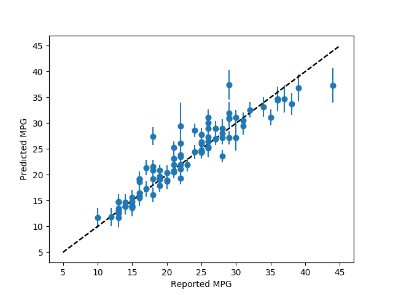

Plotting Regresssion Forest Error Bars¶
This example demonstrates using forestci to calculate the error bars of
the predictions of a sklearn.ensemble.RandomForestRegressor object.
The data used here are a classical machine learning data-set, describing various features of different cars, and their MPG.
# Regression Forest Example
import numpy as np
from matplotlib import pyplot as plt
from sklearn.ensemble import RandomForestRegressor
import sklearn.cross_validation as xval
from sklearn.datasets.mldata import fetch_mldata
import forestci as fci
# retreive mpg data from machine learning library
mpg_data = fetch_mldata('mpg')
# separate mpg data into predictors and outcome variable
mpg_X = mpg_data["data"]
mpg_y = mpg_data["target"]
# split mpg data into training and test set
mpg_X_train, mpg_X_test, mpg_y_train, mpg_y_test = xval.train_test_split(
mpg_X, mpg_y,
test_size=0.25,
random_state=42
)
# create RandomForestRegressor
n_trees = 2000
mpg_forest = RandomForestRegressor(n_estimators=n_trees, random_state=42)
mpg_forest.fit(mpg_X_train, mpg_y_train)
mpg_y_hat = mpg_forest.predict(mpg_X_test)
# calculate inbag and unbiased variance
mpg_inbag = fci.calc_inbag(mpg_X_train.shape[0], mpg_forest)
mpg_V_IJ_unbiased = fci.random_forest_error(mpg_forest, mpg_X_train,
mpg_X_test)
# Plot error bars for predicted MPG using unbiased variance
plt.errorbar(mpg_y_test, mpg_y_hat, yerr=np.sqrt(mpg_V_IJ_unbiased), fmt='o')
plt.plot([5, 45], [5, 45], '--')
plt.xlabel('Reported MPG')
plt.ylabel('Predicted MPG')
plt.show()
Total running time of the script: ( 0 minutes 8.691 seconds)